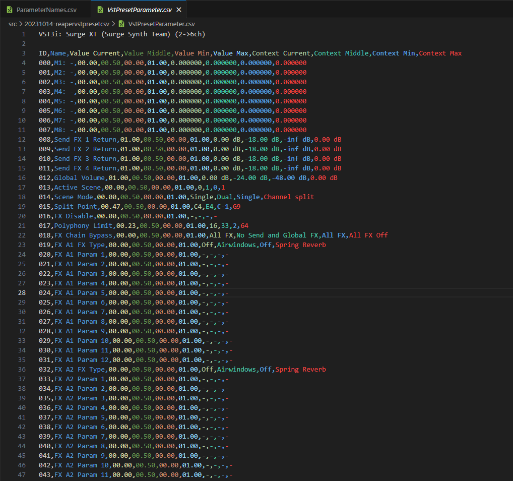

https://youtu.be/ir-Vk7YBjHo?si=2MeEDHw0jYWVCrbS
tldr: Use Reaper to get all parameters of a VST in the 1st track and export those values to CSV and TXT.
This script was written as ELL2 format that Reaper support. More info can be found at https://www.cockos.com/EEL2/ with ReaScript API https://www.cockos.com/reaper/sdk/reascript/reascripthelp.html
Usecases:
This script able to export to following formats:
This code was written by users, on Reaper forum post. I make changes to better suited for purposes stated above, the script test okay on Reaper 6.72 / Windows 11.
This script has limitations, since this is just a wrapper script that use Reaper API calls to get these values available publicly
Please note: This script will never be accurate, only the native format (XML, JSON, H2P, NMSV, FXP, FXB, etc...) that each audio instrument supports is
To illustrated this inaccuracy I'm talking about, here's some examples
The code below will initialise and set the values by using provided Reaper API functions, in this case we only want to get parameter values from the 1st track only.
RV = TrackFX_GetFormattedParamValue(tr, 0, Pidx, #form_pv);
pval = TrackFX_GetParam(tr, 0, Pidx, minval, maxval);
pval_ex = TrackFX_GetParamEx(tr, 0, Pidx, minval_ex, maxval_ex, midval_ex);
pval_norm = TrackFX_GetParamNormalized(tr, 0, Pidx);
RV = TrackFX_GetParameterStepSizes(tr, 0, Pidx, step, smallstep, largestep, istoggle);
The code below will get parameter values (different than context value), round and automatically append these values into #pv2 array
Note: DISCARD meaning it won't be present in the new script, I discard these value because they are not any significant at all
// ! ORIGINAL VERSION
sprintf(#pv2,"%05.2f, %05.2f, %05.2f, %05.2f, %05.2f, %05.2f, %05.2f, %05.2f, %05.2f,%05.2f, %05.2f, %05.2f,\ ",
minval, maxval, minval_ex, midval_ex, maxval_ex,
step, smallstep, largestep, istoggle,
pval, pval_ex, pval_norm );
// ! NEW VERSION
sprintf(#pv2,
"%05.2f, %05.2f, %05.2f, %05.2f,\ ",
pval_norm,
midval_ex,
minval,
maxval
);
The code below will get context values.
These are just hacks to get highest/lowest/middle value by manipulating Reaper to set the 1st track of highest/lowest/middle possible value.
//Reaper Hack to get middle value
TrackFX_SetParam(tr, 0, Pidx, midval_ex);
TrackFX_GetFormattedParamValue(tr, 0, Pidx, #form_def);
#pv2 += ", ";
#pv2 += #form_def;
//Reaper Hack to get minimum value
TrackFX_SetParam(tr, 0, Pidx, minval_ex);
TrackFX_GetFormattedParamValue(tr, 0, Pidx, #form_min);
#pv2 += ", ";
#pv2 += #form_min;
//Reaper Hack to get maximum value
TrackFX_SetParam(tr, 0, Pidx, maxval_ex);
TrackFX_GetFormattedParamValue(tr, 0, Pidx, #form_max);
#pv2 += ", ";
#pv2 += #form_max;
All value items in #pv2 will be appended to #pvalues
#pvalues += #pv2;
The code below specify where Reaper should export those VST parameters to (CSV and TXT), please change this to suit your own need. By default, Reaper will export at the script folder.
//--FilePath--
K_FileLocation_CSV = "/Scripts/VstPresetParameter.csv";
K_FileLocation_TXT = "/Scripts/VstPresetParameter.txt";
ParseTo(K_FileLocation_CSV);
ParseTo(K_FileLocation_TXT);